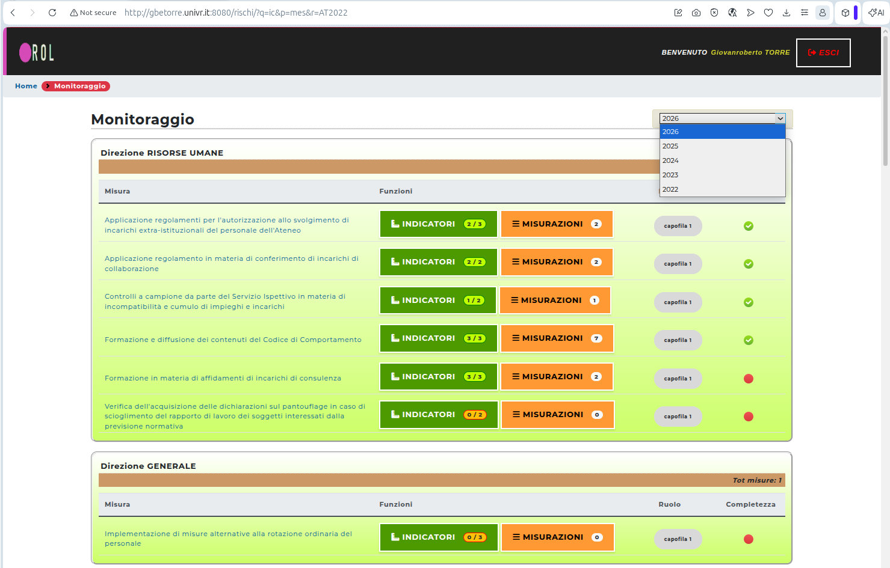

Gli indicatori di monitoraggio vengono storicizzati in base alla data della baseline e del target.
Ad esempio, se un indicatore ha baseline e target 2025, non ha senso che venga visto nel monitoraggio 2026.
Il cruscotto del monitoraggio, pertanto, avrà una casella a discesa che permetterà di selezionare tutti gli indicatori con target attinente all’anno desiderato.

Come funzionerà questa pagina?
Verranno mostrate tutte le misure che:
non risultano scadute entro l’anno selezionato e
la cui data dei dettagli monitoraggio non risulta successiva all’anno stesso.
Esempio:
data la misura “Applicazione regolamenti per l’autorizzazione allo svolgimento di incarichi extra-istituzionali del personale dell’Ateneo“ avente:
data di dettagli monitoraggio = 08/04/2024 e
data di scadenza misura = 31/12/2025
essa verrà mostrata nel monitoraggio degli anni 2024 e 2025 ma non 2023 (e precedenti) o 2026 (e successivi). Questo avviene perché negli anni 2026 e successivi la misura risulta scaduta, mentre negli anni 2023 e precedenti, la misura risulta non ancora dettagliata.
Questo filtro sulle misure visualizzate è il primo filtro, a monte.
Vi è poi un secondo filtro, che riguarda gli indicatori di monitoraggio. Vengono infatti mostrati tutti gli indicatori di monitoraggio attivi nell’anno corrente, il che significa che devono avere baseline o target (o entrambi) che cadono nell’anno corrente.
Tornando all’esempio precedente, fermo restando il filtro sulle misure, nell’anno 2025 verranno visti solo gli indicatori che hanno baseline iniziata nel 2025 oppure target terminato nel 2025 (o entrambi che cadono nel 2025, nel caso di indicatori annuali).
Se un indicatore ha target “a scavallo” da un anno all’altro, p.es. ha baseline nel 2025 e target nel 2026 (nel raro caso di un indicatore pluriennale) dovrà essere visto in entrambi gli anni, cioè sia nel 2025 sia nel 2026.
Se nell’anno considerato non vengono trovati indicatori, verranno mostrati i bottoni “+ Indicatore” che permetteranno di aggiungere un indicatore su una fase determinata.
In questo modo, a tendere le fasi avranno parecchi indicatori collegati, man man che passa il tempo e che nuovi target devono essere raggiunti e nuove misurazioni essere fornite.